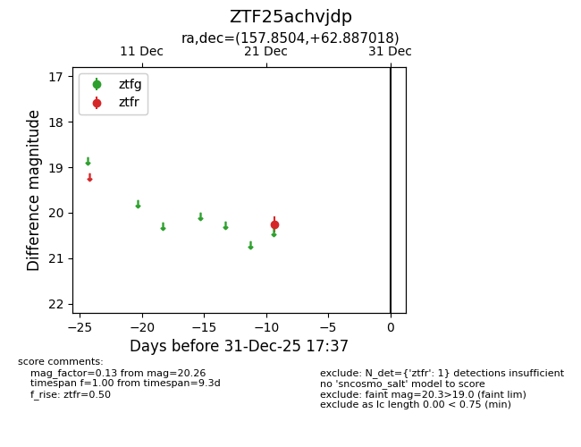
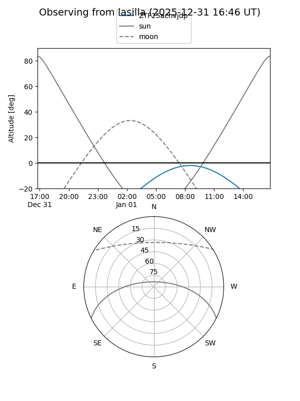
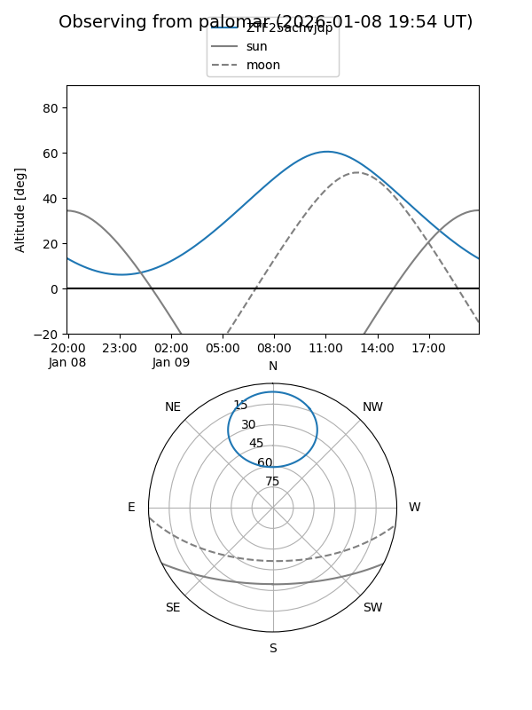

ZTF25achvjdp
Target ZTF25achvjdp at 2025-12-31 17:00
Aliases and brokers:
FINK:
Lasair:
ALeRCE:
alt names
ZTF25achvjdp (ztf,fink_ztf)
Coordinates:
equatorial (ra, dec) = 157.8504,+62.88702
equatorial (HMS+DMS) = 10:31:24.11,+62:53:13.26
galactic (l, b) = (145.7327,+47.56933)
Flags:
Photometry:
last ztfr=20.26
1 ztfr detections
Lightcurve

Visibility


Additional plots